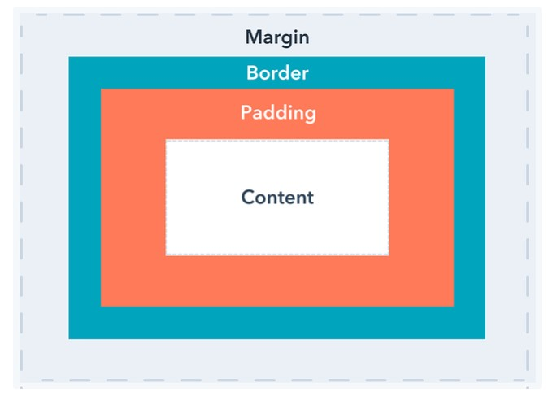

To see the difference between Margin, Border, and Padding, let's have a look at the
CSS box model. Every HTML element in a document is wrapped inside a layered box that
consists of the margin, border, padding, and content.
-
Content is the content of the CSS box, where both the images and the text are
inserted
-
Border is simply a boundary around the padding and content. It is the layer of the
CSS box model that sits between margin and padding.
-
Padding is the area around the content and inside the border. Padding has 4 sides:
top, right, bottom, left.
-
Margin is the space surrounding an element to its next outside element. Every HTML
element has four margins: top, right, bottom, and left. In another way, the margin
controls the space outside an element, and the padding controls the space inside an
element. Margin and padding are always parts of an element, even if there’s no
visible border.
